Difensori
2 Nacho Vidal (TD)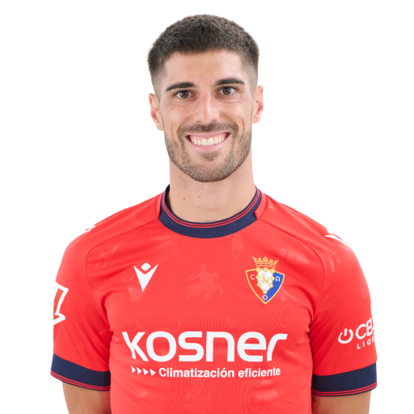
3 Juan Cruz (TS)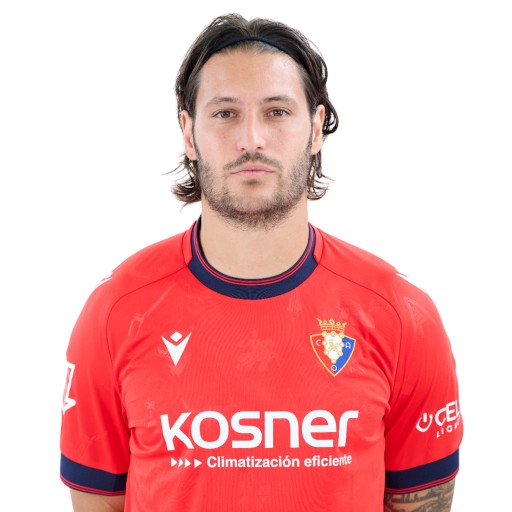
4 Unai García (DC)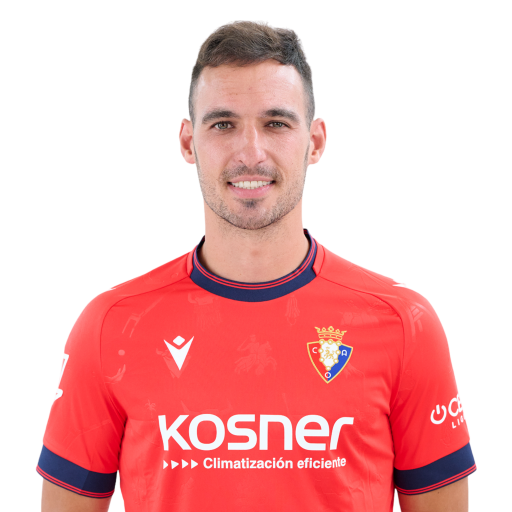
5 Jorge Herrando (DC)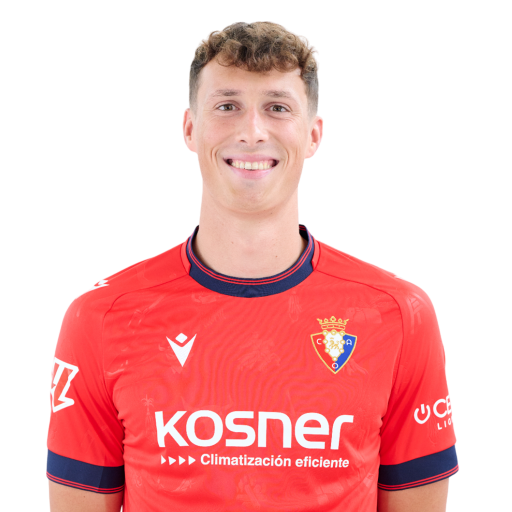
12 Jesús Areso (TD)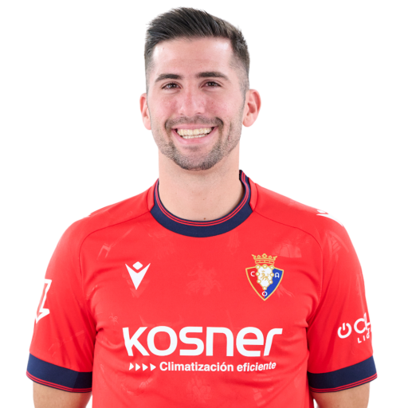
15 Rubén Peña (TD)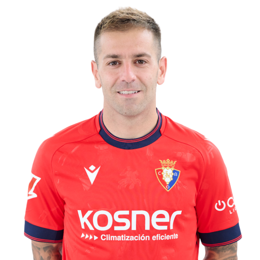
22 Enzo Boyomo (DC)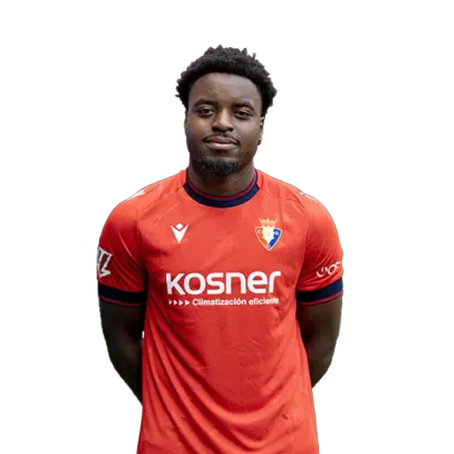
23 Abel Bretones (TS)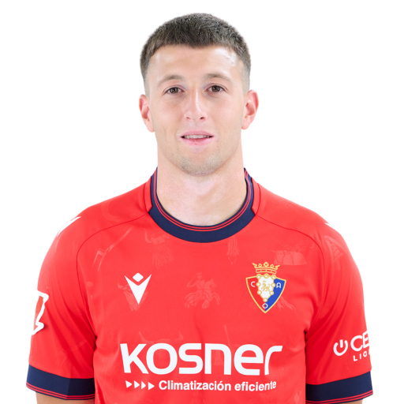
24 Alejandro Catena (DC)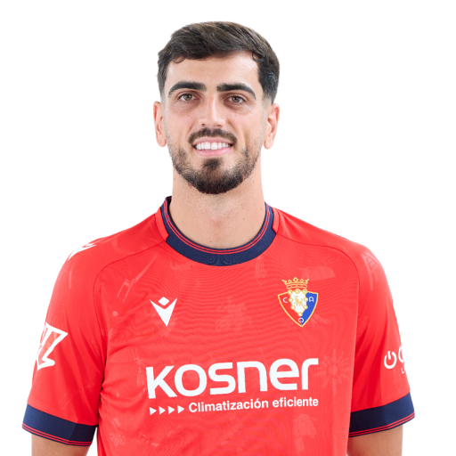
Centrocampisti
6 Lucas Torró (CC)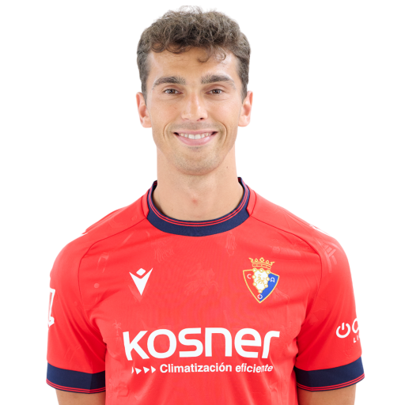
7 Jon Moncayola (CC)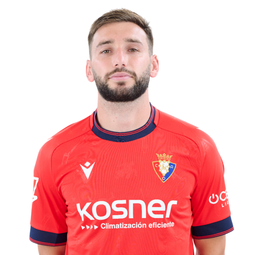
8 Pablo Ibáñez (CC)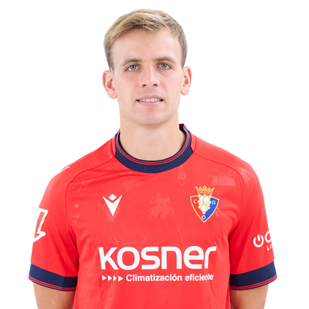
10 Aimar Oroz (TQ)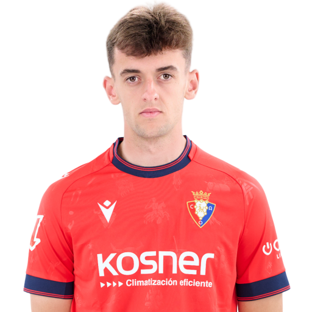
18 Iker Muñoz (CC)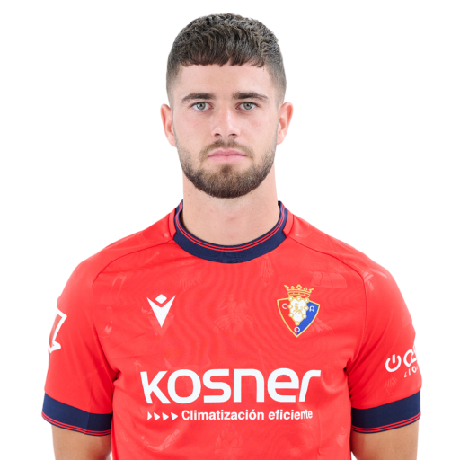
21 Javi Martínez (TQ)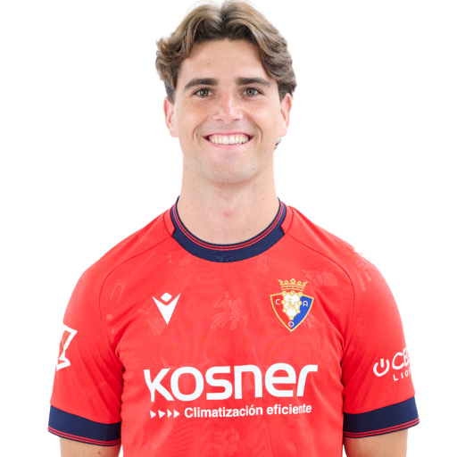
Attaccanti
9 Raúl García (AT)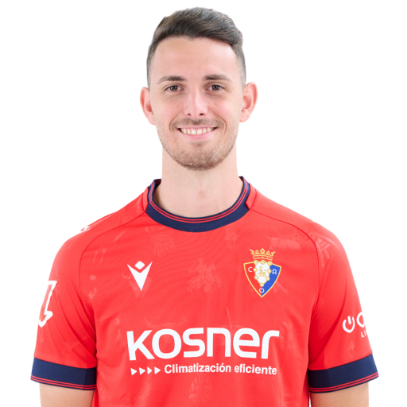
11 Kike Barja (AD)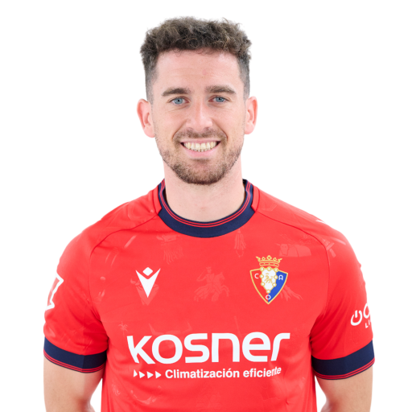
14 Rubén García (AD)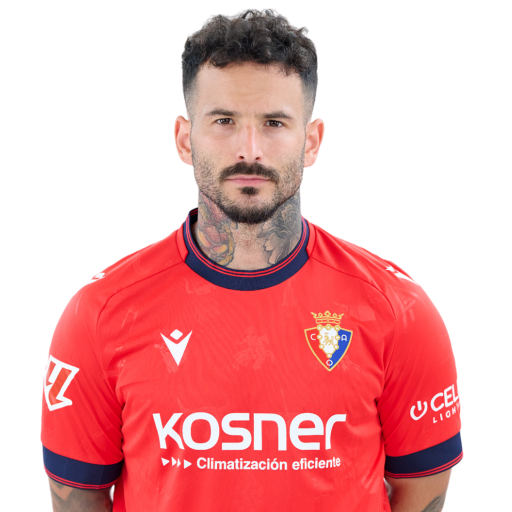
16 Moi Gómez (AS)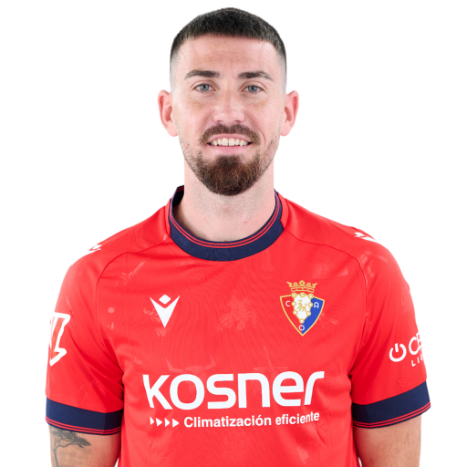
17 Ante Budimir (AT)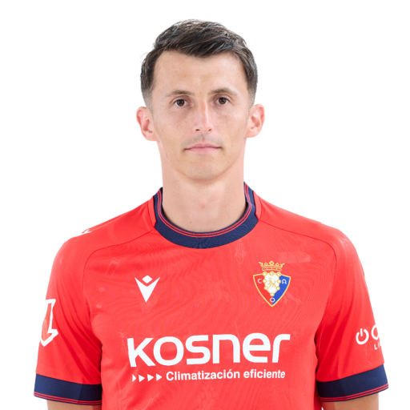
19 Bryan Zaragoza (AS)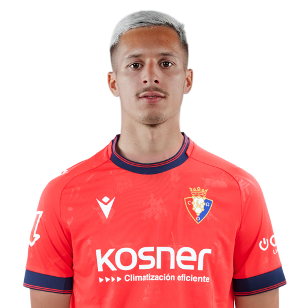
20 José Manuel Arnáiz (AS)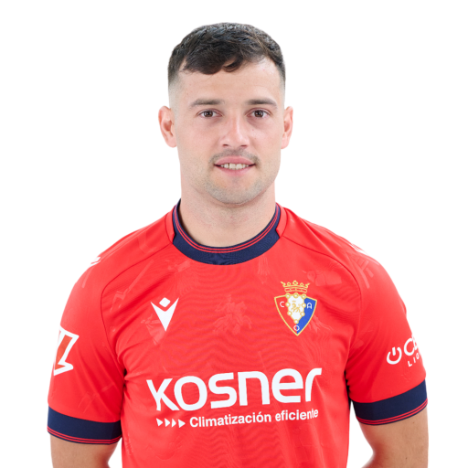
27 Iker Benito (AD)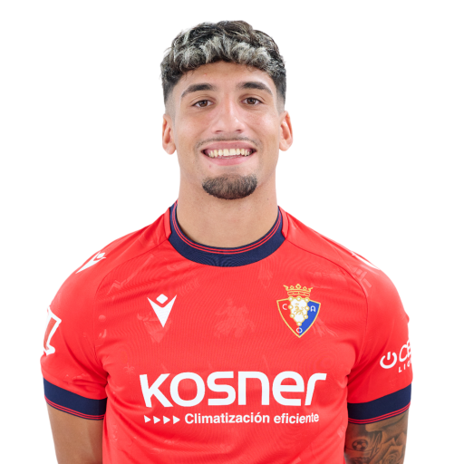